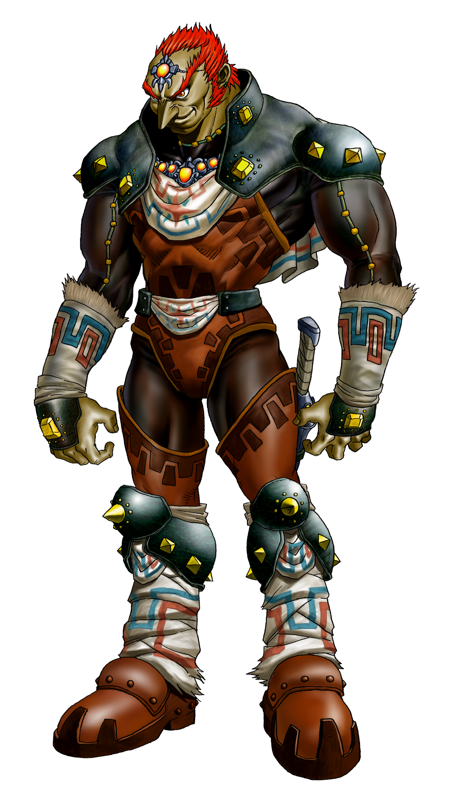

welcome to the legend of zelda
Ganondorf
Ganondorf is a central antagonist in the Legend of Zelda series, often depicted as a powerful sorcerer and the primary wielder of the Triforce of Power. He is a Gerudo, a race of desert-dwelling people, and often serves as the main adversary to Link and Zelda. Ganondorf's primary motivation is typically to obtain the full Triforce and conquer Hyrule. He is portrayed as cunning, manipulative, and ruthlessly ambitious, willing to use any means to achieve his goals. Throughout the series, Ganondorf appears in various forms, including his humanoid Gerudo form and monstrous transformations such as Ganon. Despite his malevolent nature, Ganondorf is a complex character with motivations and backstory that add depth to the Zelda lore. His presence looms large over the series, symbolizing the eternal struggle between good and evil in the world of Hyrule.
Majora
Among the most menacing adversaries in game legend is Majora, the mysterious and evil figure from "The Legend of Zelda: Majora's Mask." Majora's influence is seen throughout Termina, where she appears as a sinister mask with a twisted smile. With mysterious beginnings, Majora is a cunning intelligence that manipulates people and reality itself to further its evil objectives. By means of the Skull Kid, it starts an enormous plan to manipulate the moon so that it crashes into Earth, destroying Termina. Its intentions are still unclear; is it motivated by purely malicious intent or by something more sinister? Majora presents a challenge to players with both its terrifying aura and its powerful strength, leaving a good mark for zelda villians to comea and Majora is a wicked force that inhabits a cursed mask and plans mayhem and havoc over Termina.
helpful links
